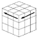
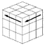
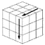
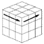

(1) Creating a white face cross
In the middle layer, arrange two horizontal same colors on three faces, and finally raise four white edge posts vertically on the white face.
(2) Monogusa back home together
Double-cube is turned to the white face, F2L x 4 times
・ If the corner post has a white top surface ,・ Depending on the top surface color of the edge cube at the position of Keima(Chess knight),
use the Keima accelerator or the Keima brake properly to slot in.
However, if you defeat it and notice the unique Keima position pattern below,
it is faster to defeat the post.
・ Other than white on the top surface,
・ If the color is the same, the edge cube neighbour to the corner post.
・ The color is different, move the edge cube to the position of Keima with the corner.
and slot in each.
Keima Accelerator Case: Due to imaging, the
same edge cube as the two colors of the white posts at each corner, which expresses the yellow surface as a white
surface, is placed at the position of Keima on the upper surface that matches the color of the center cube.
When raising white or Keima, don't forget to rotate it sideways in advance so that the slots that can be broken come to the rear.
Determine the sideways tilting direction of the edge slot (“R” in the above example) so that the corner post can be aligned with the top color of the edge cube at Keima's position , and tilt it to accept the lateral rotation of the corner slot.
(It was If the first red color in the upper left circle painting, attention in the upper part of [R] [R'] rotation be reversed.
Each referred to as Keima accelerator, a Keima brake, and joseki)
then , Rotate the edge slot vertically, rotate the upper layer 90 ° to reach the vertical rotation of the edge slot, and after rotating the corner slot -90 ° back, rotate it vertically with the white facing down.

Don't forget to put back any slots that were affected by the edge rotation.
In the 4th slot-in, it is also effective to mix it well with "removable with children". If you feel a decline in "Monogusa Renki", there is also a means called < F2L for beginners >.
(3) Corner exchange
4 Determine the position of the corner.
If there are two corner posts with the same color surface on one side, they are rotated to the surface of that color and the adjacent exchange is performed. Adjacent exchange 80%, diagonal exchange (Kurukuru move) 10%, position of upper 4 corners confirmed. There is also no operation
(4) Creating a fish-shaped cross (basically the same as the simple solution)
After determining the positions of the four corners, the rotation proceeds along the shape of the yellow surface.(Horizontal bar, X-move at 3,6,o'clock then X-perm ⇒ with fish shape)
Depending on the starting position,
・ Right-handed "from shoulder perm (Cross_both_side, Butterfly, Turtle_front_light)"
・ Right-handed "from the waist perm (Turtle_hand_open)"
・ the final stage of the left and right turn "yellow Mixed Perm".
↓ ↓ ↓
Dot → Horizontal bar → 3 o'clock → 6 o'clock → Cross (corner exchange) ⇒ Fish-shaped cross
↓ → → → ↑ ↓ → Turtle, butterfly, cross ⇒ Fish-shaped cross
↓ ↓
Dot → Horizontal bar → 3 o'clock ⇒ Yellow on top side reach
most cases, it will be an X-perm after the next three courses after X-move.
・ Dot-bar-3-6 (or diagonal move omitted-bar-3-6) ・ Bar-6
・ 3-6

(5) Monogusa Goldfish
Evolve the yellow-faced fish shape into a Goal Fish fish shape that includes the side surface as shown in the figure below.
Basically, edge A' and edge B' evolve only on one or both of the pick Perm.
Fish upper horizontal three are surface without yellow ('AA head edge) A' color 'C to take the facing pickup rotation (Up), ( AA' ) of the facing ('BB head edge) B' color the 'C pick rotated to pick up from the face (Up)
if two edges are in mutual face-to-face rather than the left and right (rear comrade), cross exchange (Hp)
when from-yellow one aspect, three of the same color facing CC' from (Up)
Go to the goal at once if you do not have the same color, go to (4) after the X-perm
(6)Go to the goal at once with Kuru kuru perm From the position of the arrow ⇩ , set one left and right X-perm.
In the previous step, the color of one of the fish's heads was the same as the corner cube, and the tails facing each other were alsothe same color as the head corners. 'A'B'C the color of there was a corner with three,
skip the PLL stage, CC' in front of the face of, the left and right rotation either of the procedure,
exhilaration to a stretch goal.
X-perm (left hand): L U L' U L U2 L' right turn (Xp-a)
(right hand) R' U' R U' R' U'2 R left turn (Xp-b)
 → 
→
→ 
→  →
→
→
→
→
→  →
→
 →  →
 →
→
→
→
→
→  →
→
Turn clockwise from the position of the arrow Turn counterclockwise from the position of the arrow
In addition, the actual result is the appearance balance of 90% of Kuru Kuru perm and 10% of H perm in the final turn.
 →
→
→
→
→
→  →
→
→
→  →
→
→
→